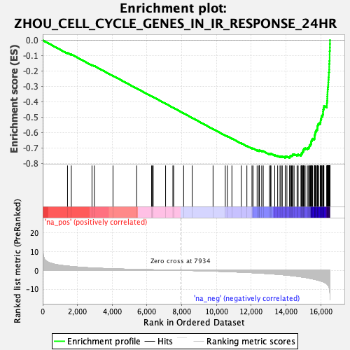
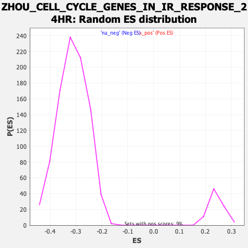

| | | Dataset | DE_genes2 |
| Phenotype | NoPhenotypeAvailable |
| Upregulated in class | na_neg |
| GeneSet | ZHOU_CELL_CYCLE_GENES_IN_IR_RESPONSE_24HR |
| Enrichment Score (ES) | -0.7643624 |
| Normalized Enrichment Score (NES) | -2.446538 |
| Nominal p-value | 0.0 |
| FDR q-value | 0.0 |
| FWER p-Value | 0.0 |
Table: GSEA Results Summary

Fig 1: Enrichment plot: ZHOU_CELL_CYCLE_GENES_IN_IR_RESPONSE_24HR
Profile of the Running ES Score & Positions of GeneSet Members on the Rank Ordered List
| PROBE | GENE SYMBOL | GENE_TITLE | RANK IN GENE LIST | RANK METRIC SCORE | RUNNING ES | CORE ENRICHMENT | | 1 | SEMA3B | | | 1428 | 2.240 | -0.0825 | No |
| 2 | PLEK2 | | | 1646 | 2.044 | -0.0916 | No |
| 3 | SULF2 | | | 2836 | 1.272 | -0.1615 | No |
| 4 | FBLN1 | | | 2973 | 1.207 | -0.1673 | No |
| 5 | SMPD4 | | | 4044 | 0.825 | -0.2308 | No |
| 6 | WIPI1 | | | 5408 | 0.467 | -0.3129 | No |
| 7 | LXN | | | 6265 | 0.292 | -0.3645 | No |
| 8 | MXRA5 | | | 6308 | 0.285 | -0.3665 | No |
| 9 | FABP5 | | | 6357 | 0.273 | -0.3688 | No |
| 10 | TDP1 | | | 7070 | 0.140 | -0.4119 | No |
| 11 | NCAPH2 | | | 7491 | 0.067 | -0.4374 | No |
| 12 | SOD3 | | | 7536 | 0.059 | -0.4399 | No |
| 13 | RPA2 | | | 8108 | -0.028 | -0.4747 | No |
| 14 | IFT20 | | | 8601 | -0.110 | -0.5044 | No |
| 15 | GINS3 | | | 9801 | -0.401 | -0.5766 | No |
| 16 | POC1A | | | 10504 | -0.626 | -0.6181 | No |
| 17 | DCTPP1 | | | 10624 | -0.670 | -0.6240 | No |
| 18 | CDK2 | | | 10886 | -0.760 | -0.6384 | No |
| 19 | CLN6 | | | 11421 | -0.978 | -0.6690 | No |
| 20 | NUP88 | | | 11747 | -1.108 | -0.6865 | No |
| 21 | ODF2 | | | 12041 | -1.240 | -0.7019 | No |
| 22 | LAMB1 | | | 12101 | -1.273 | -0.7029 | No |
| 23 | FGFR1OP | | | 12336 | -1.395 | -0.7144 | No |
| 24 | DTYMK | | | 12442 | -1.447 | -0.7179 | No |
| 25 | HAUS8 | | | 12459 | -1.454 | -0.7159 | No |
| 26 | RBBP8 | | | 12469 | -1.463 | -0.7135 | No |
| 27 | CMC2 | | | 12600 | -1.532 | -0.7184 | No |
| 28 | E2F8 | | | 12689 | -1.584 | -0.7205 | No |
| 29 | KIF22 | | | 13043 | -1.792 | -0.7384 | No |
| 30 | POLD1 | | | 13115 | -1.833 | -0.7391 | No |
| 31 | MDC1 | | | 13132 | -1.843 | -0.7363 | No |
| 32 | HMGB3 | | | 13350 | -1.994 | -0.7456 | No |
| 33 | TIMELESS | | | 13518 | -2.107 | -0.7515 | No |
| 34 | ALYREF | | | 13653 | -2.199 | -0.7552 | No |
| 35 | RANBP1 | | | 13713 | -2.252 | -0.7543 | No |
| 36 | MCM3 | | | 13783 | -2.315 | -0.7539 | No |
| 37 | MCM7 | | | 13952 | -2.457 | -0.7591 | Yes |
| 38 | RFC5 | | | 13956 | -2.460 | -0.7544 | Yes |
| 39 | NEK2 | | | 14051 | -2.552 | -0.7550 | Yes |
| 40 | TPRKB | | | 14206 | -2.697 | -0.7589 | Yes |
| 41 | KIF20A | | | 14222 | -2.716 | -0.7544 | Yes |
| 42 | KNSTRN | | | 14258 | -2.748 | -0.7510 | Yes |
| 43 | KPNA2 | | | 14317 | -2.796 | -0.7489 | Yes |
| 44 | MAGOHB | | | 14370 | -2.855 | -0.7463 | Yes |
| 45 | GPN3 | | | 14390 | -2.871 | -0.7417 | Yes |
| 46 | PTTG1 | | | 14464 | -2.952 | -0.7402 | Yes |
| 47 | EIF2S1 | | | 14635 | -3.169 | -0.7442 | Yes |
| 48 | UBE2T | | | 14697 | -3.240 | -0.7414 | Yes |
| 49 | DNAJC9 | | | 14857 | -3.434 | -0.7442 | Yes |
| 50 | CACYBP | | | 14884 | -3.479 | -0.7388 | Yes |
| 51 | PCNA | | | 14896 | -3.501 | -0.7324 | Yes |
| 52 | CSE1L | | | 14944 | -3.568 | -0.7281 | Yes |
| 53 | RACGAP1 | | | 14957 | -3.580 | -0.7217 | Yes |
| 54 | NUP107 | | | 15003 | -3.655 | -0.7171 | Yes |
| 55 | MCM2 | | | 15006 | -3.658 | -0.7098 | Yes |
| 56 | E2F1 | | | 15036 | -3.695 | -0.7042 | Yes |
| 57 | CENPN | | | 15099 | -3.785 | -0.7003 | Yes |
| 58 | CDCA8 | | | 15225 | -3.955 | -0.7000 | Yes |
| 59 | MCM8 | | | 15299 | -4.112 | -0.6962 | Yes |
| 60 | SPAG5 | | | 15339 | -4.181 | -0.6901 | Yes |
| 61 | EZH2 | | | 15352 | -4.214 | -0.6824 | Yes |
| 62 | CDC20 | | | 15404 | -4.309 | -0.6768 | Yes |
| 63 | RAD54L | | | 15435 | -4.365 | -0.6699 | Yes |
| 64 | EXOSC8 | | | 15447 | -4.383 | -0.6618 | Yes |
| 65 | MTFR2 | | | 15456 | -4.399 | -0.6534 | Yes |
| 66 | MYBL2 | | | 15492 | -4.462 | -0.6466 | Yes |
| 67 | TRIP13 | | | 15527 | -4.544 | -0.6395 | Yes |
| 68 | BORA | | | 15631 | -4.778 | -0.6362 | Yes |
| 69 | CCNB1 | | | 15643 | -4.796 | -0.6272 | Yes |
| 70 | KIFC1 | | | 15645 | -4.799 | -0.6176 | Yes |
| 71 | KNTC1 | | | 15665 | -4.846 | -0.6090 | Yes |
| 72 | UHRF1 | | | 15683 | -4.875 | -0.6003 | Yes |
| 73 | UBE2C | | | 15704 | -4.913 | -0.5916 | Yes |
| 74 | BIRC5 | | | 15741 | -4.998 | -0.5838 | Yes |
| 75 | NASP | | | 15792 | -5.106 | -0.5765 | Yes |
| 76 | RFC4 | | | 15807 | -5.149 | -0.5670 | Yes |
| 77 | CDK1 | | | 15810 | -5.156 | -0.5568 | Yes |
| 78 | CCNB2 | | | 15832 | -5.225 | -0.5476 | Yes |
| 79 | TOPBP1 | | | 15880 | -5.334 | -0.5397 | Yes |
| 80 | PAICS | | | 15966 | -5.553 | -0.5337 | Yes |
| 81 | PARPBP | | | 15988 | -5.636 | -0.5237 | Yes |
| 82 | CHAC2 | | | 15997 | -5.652 | -0.5128 | Yes |
| 83 | LBR | | | 16028 | -5.754 | -0.5031 | Yes |
| 84 | MAD2L1 | | | 16043 | -5.805 | -0.4923 | Yes |
| 85 | PRC1 | | | 16103 | -5.960 | -0.4839 | Yes |
| 86 | MELK | | | 16129 | -6.045 | -0.4732 | Yes |
| 87 | SPC25 | | | 16131 | -6.050 | -0.4611 | Yes |
| 88 | BUB1 | | | 16142 | -6.084 | -0.4495 | Yes |
| 89 | FBXO5 | | | 16169 | -6.210 | -0.4386 | Yes |
| 90 | LMNB1 | | | 16178 | -6.259 | -0.4265 | Yes |
| 91 | KIF23 | | | 16347 | -7.203 | -0.4223 | Yes |
| 92 | ANLN | | | 16350 | -7.214 | -0.4079 | Yes |
| 93 | QSER1 | | | 16360 | -7.265 | -0.3938 | Yes |
| 94 | NUSAP1 | | | 16374 | -7.420 | -0.3797 | Yes |
| 95 | CCNA2 | | | 16376 | -7.439 | -0.3648 | Yes |
| 96 | NUF2 | | | 16382 | -7.475 | -0.3501 | Yes |
| 97 | EXO1 | | | 16387 | -7.570 | -0.3351 | Yes |
| 98 | HAUS3 | | | 16393 | -7.636 | -0.3201 | Yes |
| 99 | KIF11 | | | 16409 | -7.860 | -0.3052 | Yes |
| 100 | USP1 | | | 16424 | -8.003 | -0.2900 | Yes |
| 101 | NEIL3 | | | 16430 | -8.045 | -0.2741 | Yes |
| 102 | CENPA | | | 16438 | -8.139 | -0.2582 | Yes |
| 103 | TTK | | | 16444 | -8.189 | -0.2420 | Yes |
| 104 | CDKN3 | | | 16463 | -8.532 | -0.2260 | Yes |
| 105 | SMC2 | | | 16464 | -8.568 | -0.2087 | Yes |
| 106 | DLGAP5 | | | 16482 | -9.145 | -0.1914 | Yes |
| 107 | CENPK | | | 16485 | -9.298 | -0.1728 | Yes |
| 108 | CKAP2 | | | 16486 | -9.390 | -0.1540 | Yes |
| 109 | TOP2A | | | 16497 | -9.873 | -0.1347 | Yes |
| 110 | CENPF | | | 16507 | -10.688 | -0.1138 | Yes |
| 111 | CEP55 | | | 16508 | -10.710 | -0.0922 | Yes |
| 112 | ASPM | | | 16510 | -10.824 | -0.0706 | Yes |
| 113 | DEPDC1 | | | 16522 | -11.603 | -0.0479 | Yes |
| 114 | HMGB2 | | | 16525 | -11.801 | -0.0243 | Yes |
| 115 | HMMR | | | 16528 | -12.240 | 0.0002 | Yes |
Table: GSEA details [plain text format]

Fig 2: ZHOU_CELL_CYCLE_GENES_IN_IR_RESPONSE_24HR: Random ES distribution
Gene set null distribution of ES for ZHOU_CELL_CYCLE_GENES_IN_IR_RESPONSE_24HR